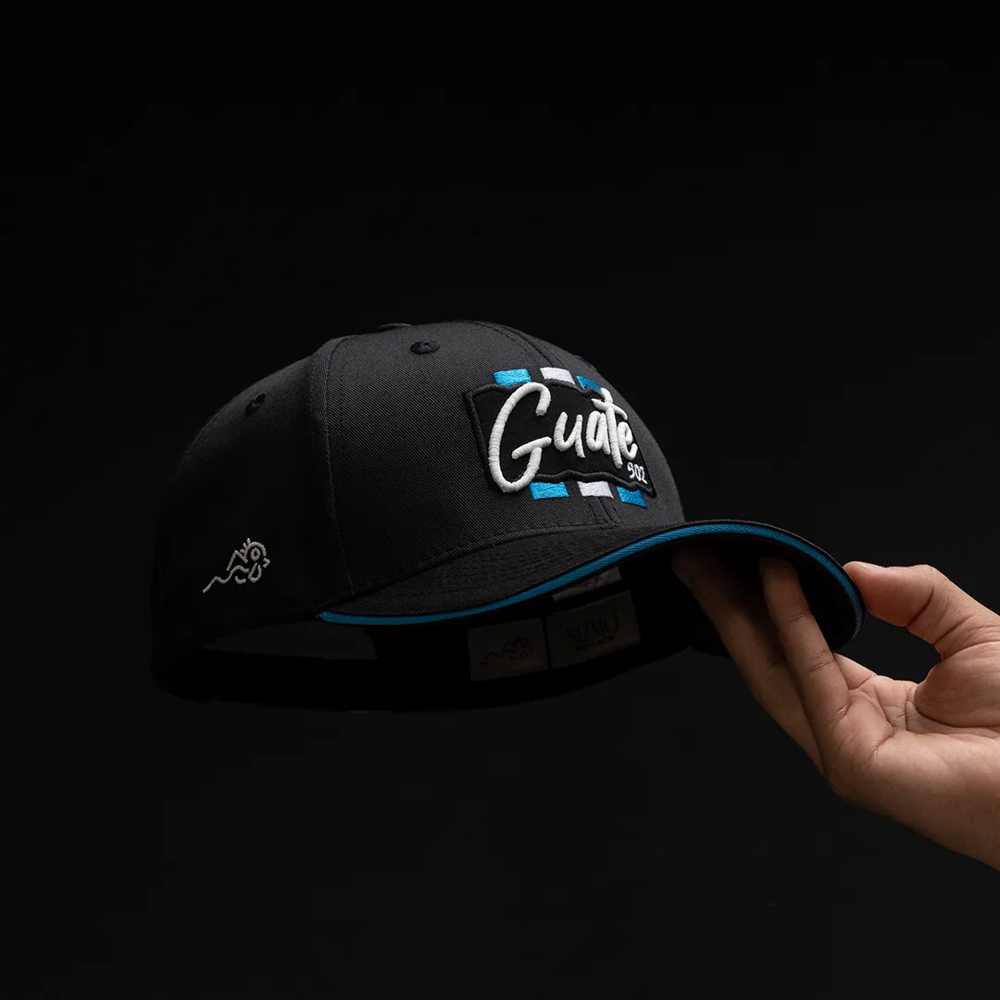
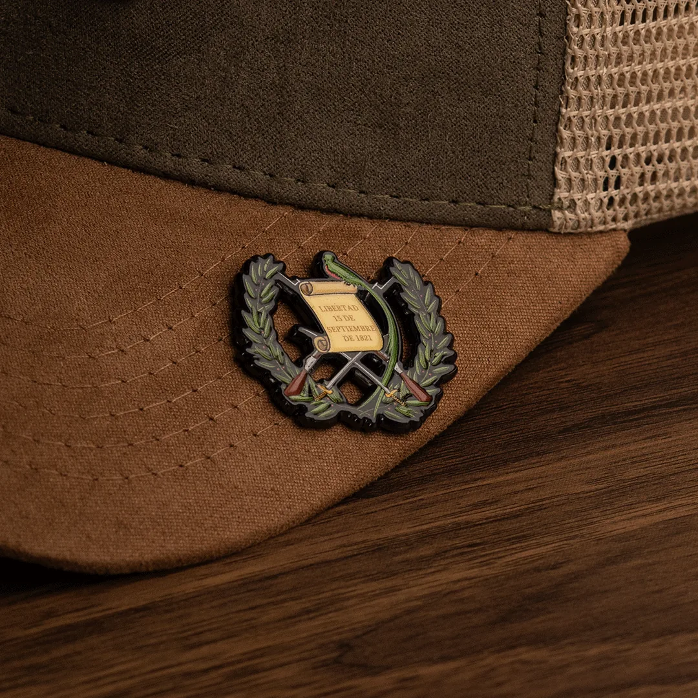
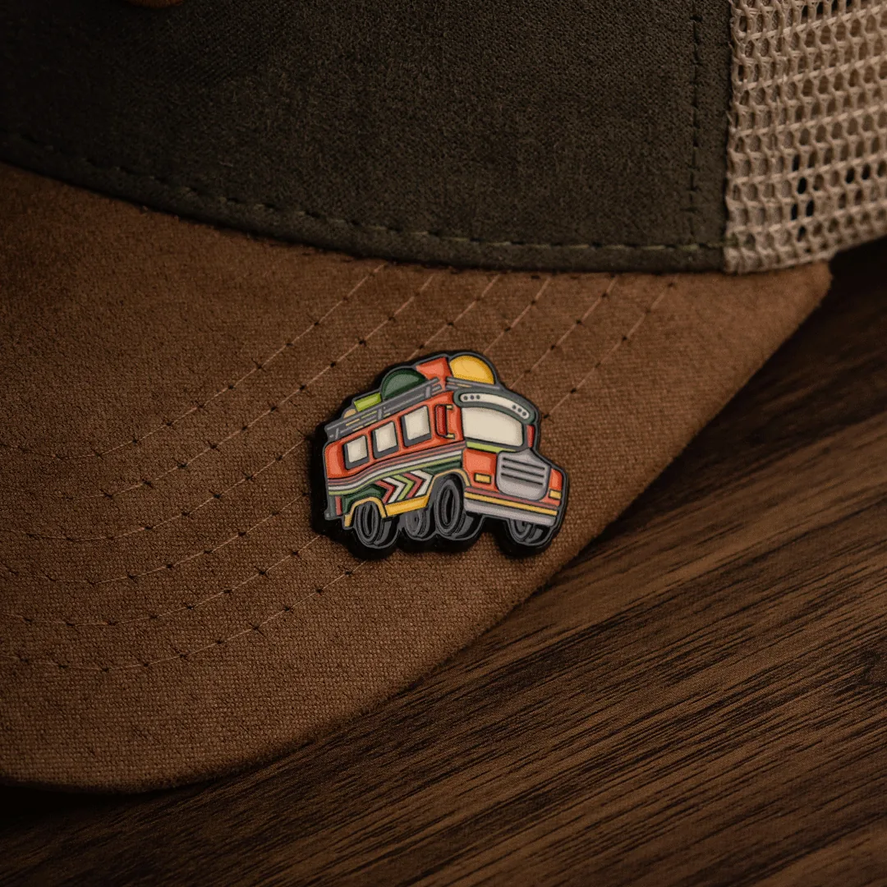

01
Referencia de catálogo
Gorra Oficial de Guatemala
Gorra negra con detalles celestes y bordado; revisar variantes oficiales.

Imagen publicada por Sizmo CapsLa Gorra Oficial de Guatemala y pines para armar tu selección. Piezas del catálogo SIZMO CLUB.
Guarda tus referencias en una lista local y prepara el siguiente paso. Precios, variantes y existencias se revisan en cada ficha oficial.
Gorra negra con detalles celestes y bordado; revisar variantes oficiales.

Pin metálico con el Escudo de Armas de Guatemala.

Pin metálico inspirado en la camioneta guatemalteca.
Marca de gorras con colecciones y carrito; su historia describe confección en Guatemala y trabajo para marcas.
Prueba cantidades y condiciones. Obtén un resumen local para revisar antes de hablar con la empresa.
Datos revisados el 3 de noviembre de 2026. La empresa confirma cualquier condición vigente.
Gorra negra con detalles celestes y bordado; revisar variantes oficiales.
Pin metálico con el Escudo de Armas de Guatemala.
Pin metálico inspirado en la camioneta guatemalteca.
La página de historia relata un origen familiar en confección.
Su historia sitúa la confección y evolución de la marca en Guatemala.
La tienda presenta, entre otras, la Gorra Oficial de Guatemala y colecciones de gorras.
El catálogo publica fichas individuales de pines.
La tienda oficial dispone de carrito; condiciones y disponibilidad se confirman allí.